Activity: Constructing a mouse base
In the following activity, construct a computer mouse base. This activity reinforces the feature construction techniques you have already learned, and it utilizes treatment features.
Overview
Construct the computer mouse base shown in the illustration. This activity reinforces the ordered feature construction techniques you have already learned, and it utilizes treatment features.
Objectives
In this activity, learn how to:
-
Construct a solid model with holes, cutout, and draft.
-
Use the Thin Wall command.
-
Use the Mounting Boss command.
-
Use PathFinder to select features.
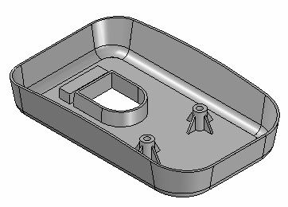
Create a new ISO Metric Part file.
Make sure you are in the ordered environment.
Create an extrusion as the base feature for the mouse.
In PathFinder, turn off the base coordinate system display. Turn on the base reference planes display.
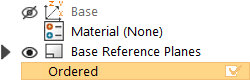
Choose the Home tab→Solids group→Extrude command.
On the command bar, click the Coincident Plane option, and select the reference plane shown.
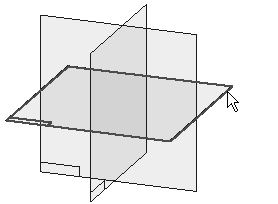
Draw the profile.
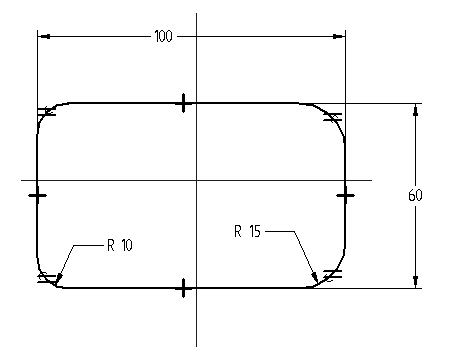
Place Horizontal/Vertical relationships to center the profile on the midpoints of the reference planes.
Fillets (R 10 and R 15) are in two places with Equal relationships applied.
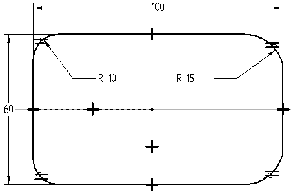
Click Close Sketch.
Extend the profile upward 20 and click Finish.
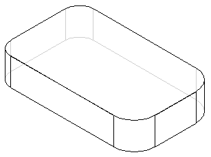
Click Cancel.
Hide all reference planes.
Change the display of the part. In the View Styles group, click the Visible and Hidden Edges display.
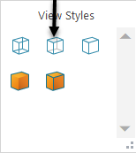
Create a cutout on the bottom side of the part.
Choose the Home tab→Solids group→Extrude command.
Use the reference plane used to create the base feature. On command bar, select the Last Plane option.
Draw the profile and apply the dimensional constraints.
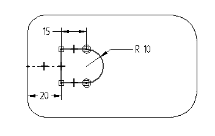
Click Close Sketch.
On the command bar, set the Add/Cut option to Cut.
On command bar, click the Finite Extent option, and in the Distance box type 8.
Project the cutout upward, and finish the feature.
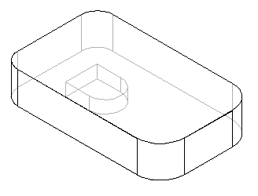
On the command bar, click Cancel.
Save the file as mouse.par.
In the Solids group, choose the Draft command .
For the Draft Plane Step, select the bottom face as shown.
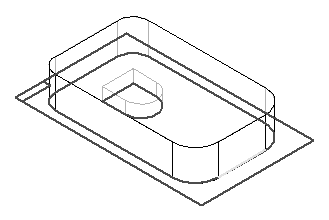
For the Select Face Step, select one side face of the mouse base. All side faces of the mouse base should highlight. The default Select option is set to Chain which selects all chained faces not parallel to the draft plane.
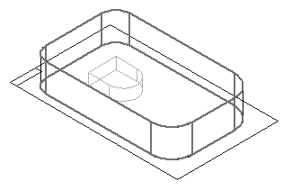
Type 10 in the Draft Angle field, and click the Accept button.
You can specify different draft angles for multiple faces in the Select Face Step. If no other faces are to be drafted, click Next to leave the Select Face Step.
For the Draft Direction Step, orient the direction as shown so that the draft is applied outward, and then click.
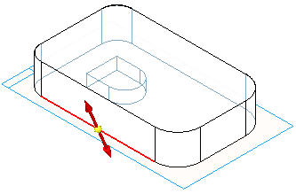
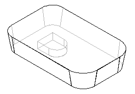
Right-click to finish.
Add a round feature to the bottom edge of the part.
Choose the Round command .
For the Select Step, identify the edges to round. On command bar, in the Select box, click the Chain option. This lets you select a connected chain of edges with one click.
Select the chain of edges around the bottom face of the part as shown.
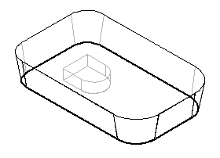
Type 5 in the Radius field and click the Accept button.
Use the default parameters. Skip the Round Parameters Step. Click Preview and then Finish.
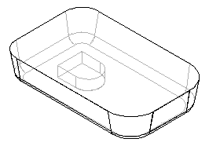
Click Cancel.
Save the document.
Add draft to the cutout feature in the part.
Choose the Draft command.
Use QuickPick to select the bottom face to define the draft plane as shown.
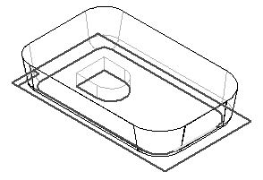
Select the chain of faces that form the sides of the cutout. Click once to select the three faces that are tangent to each other, and click once more to select the remaining face.
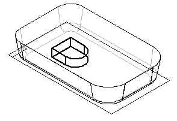
Type 2 in the Draft Angle field and click the Accept button.
Right-click.
Orient the draft direction as shown, and then click to accept.
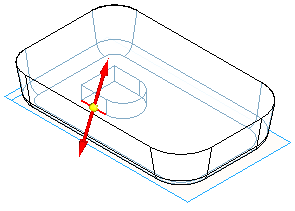
Right-click to finish the draft.
Save the file.
Use the Thin Wall command to remove the interior material from the part.
Choose the Thin Wall command.
For the Common Thickness Step, specify the thickness to apply to all faces of the part. In the Common Thickness box, type 1 and press Enter.
For the Open Faces Step, select the top face of the part and the top face of the cutout as the open surfaces.
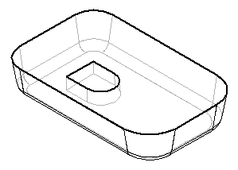
Click the Accept button to accept the faces.
You can apply unique thickness to faces of the part. To skip this step, click Preview to process the thin wall. Click Finish to complete the feature placement.
Click the Shaded with Visible Edges display.
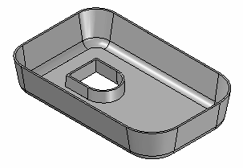
Add a cutout to remove material from the top of the mouse base.
Right-click in the part window and click Show All→Reference Planes.
Choose the Extrude command, and select the reference plane shown.
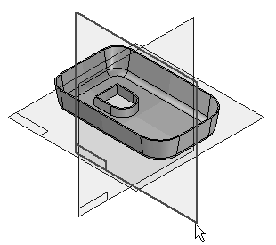
Choose the Arc by 3 Points command , and place an arc that touches the two sides and is tangent to the top of the part. The command is in the Draw group on the Tangent Arc list.
The first and second points define the arc sweep. The third point defines the radius.
Place and modify the dimension as shown. Add a Horizontal relationship to the two endpoints of the arc as shown.
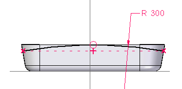
Click Close Sketch.
On the command bar, set the Add/Cut option to Cut.
For the Side Step, position the cursor as shown in the illustration and click.
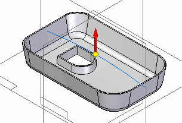
On command bar, set the Extent to Through All. Position the cursor so that arrows point from both sides of the profile and click.
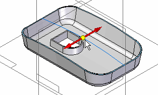
Finish the cutout and save the file.
Hide all reference planes.
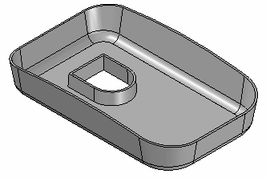
Add another cutout. Since the part is thin walled, the additional cutout is not thin walled unless it is constructed before the thin wall step. The following steps demonstrate how to go back in the creation process to a point before the thin wall had been applied and place another cutout.
Change display to Visible and Hidden Edges.
Choose the Select Tool.
In PathFinder, right-click the feature named Cutout 1, and on the shortcut menu, select the GoTo command.
Choose the Extrude command and use QuickPick to select the reference plane shown.
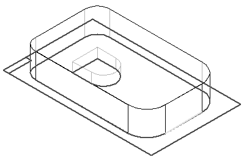
Draw the rectangular profile.
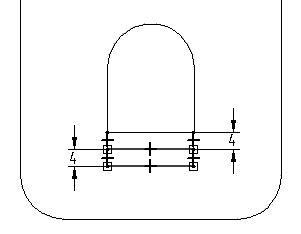
Click Close Sketch and project the cutout upward 5 using the Finite Extent option.
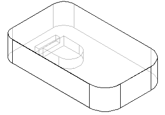
Click Finish and then click Cancel.
Since this cutout was placed before the thin wall feature, use the GoTo command to apply the thin wall to the new cutout.
Choose the Select Tool.
Right-click the last feature listed in PathFinder, and select the GoTo option from the shortcut menu. The part returns to the thin wall state. The cutout just constructed has thin wall sides because it was placed before the thin wall feature.
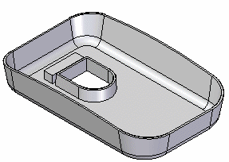
In the Solids group, choose the Mounting Boss command
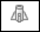
on the Thin Wall list.On the Mounting Boss command bar, click the Parallel Plane option.
Select the bottom plane as shown.
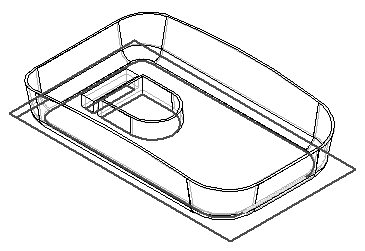
On the command bar, type 10 in the Distance field. Position the parallel plane above the bottom plane as shown and click.
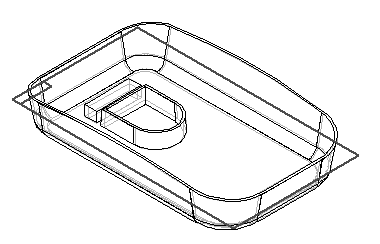
On the command bar, click the Mounting Boss Options button and set the Mounting Boss Options as shown and click OK.
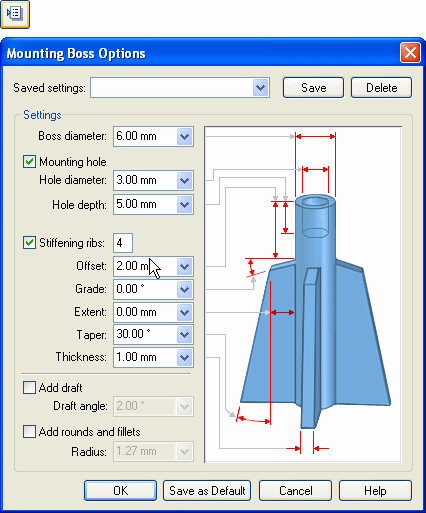
Position the bosses as shown and then click Close Sketch.
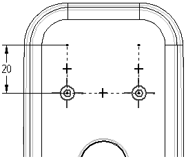
Define the extent direction as shown.
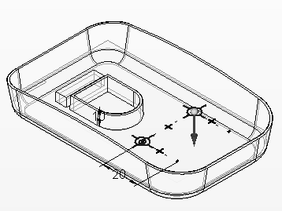
Click Finish and then click Cancel.
Save the document and close the file. This completes the activity.
In this activity you learned how to add draft to some of the faces of a molded part. You learned how use the GoTo command to insert a feature at a desired location within Feature PathFinder. You learned to place bosses using the Mounting Boss command.
-
Click the Close button in the upper–right corner of this activity window.